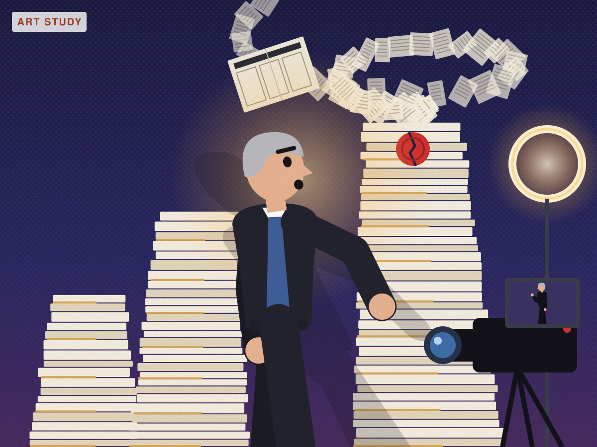

Comey charged a third time: before and after
Same verified facts. Left is what was published; right is a test under the new creativity bar (not published).

Same verified facts. Left is what was published; right is a test under the new creativity bar (not published).
